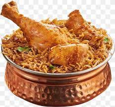
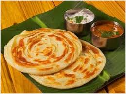

Chicken Biryani is a flavorful and aromatic rice dish that originated in the Indian subcontinent and is loved worldwide.

Dosa is a crispy, golden-brown, and thin pancake made from a fermented batter of rice and urad dal (black gram lentils).

Parotta (or Barotta) is a layered, flaky, and soft Indian flatbread made from maida (refined flour), water, oil, and salt.

Vada is a crispy, deep-fried South Indian snack made from lentil batter. It is known for its golden-brown crust and soft, fluffy